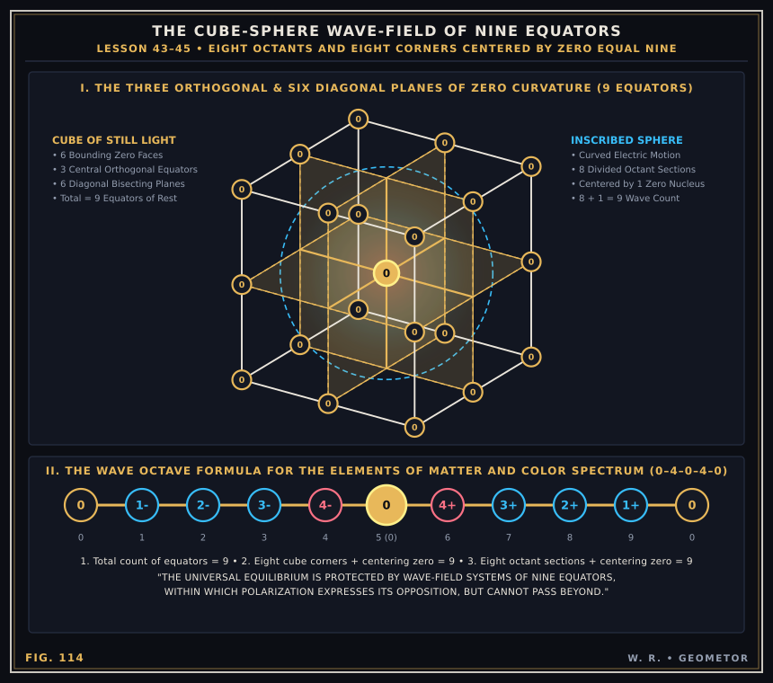
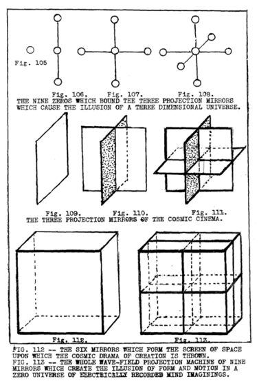
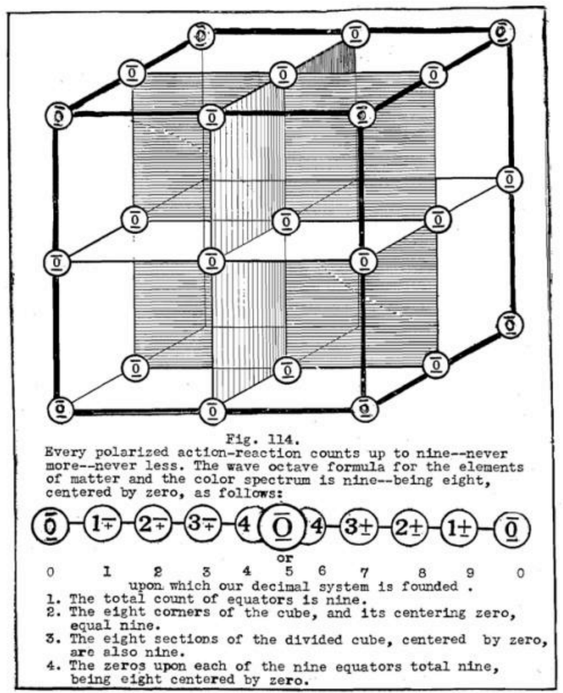
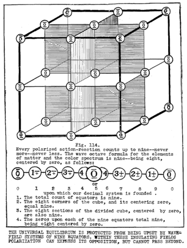
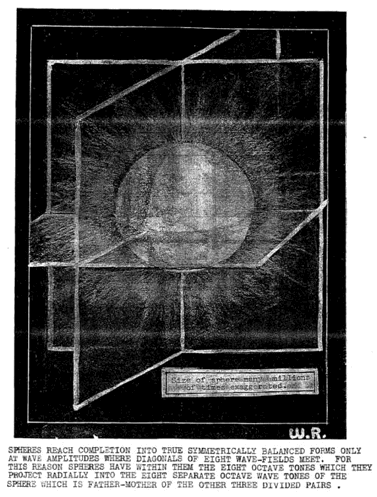
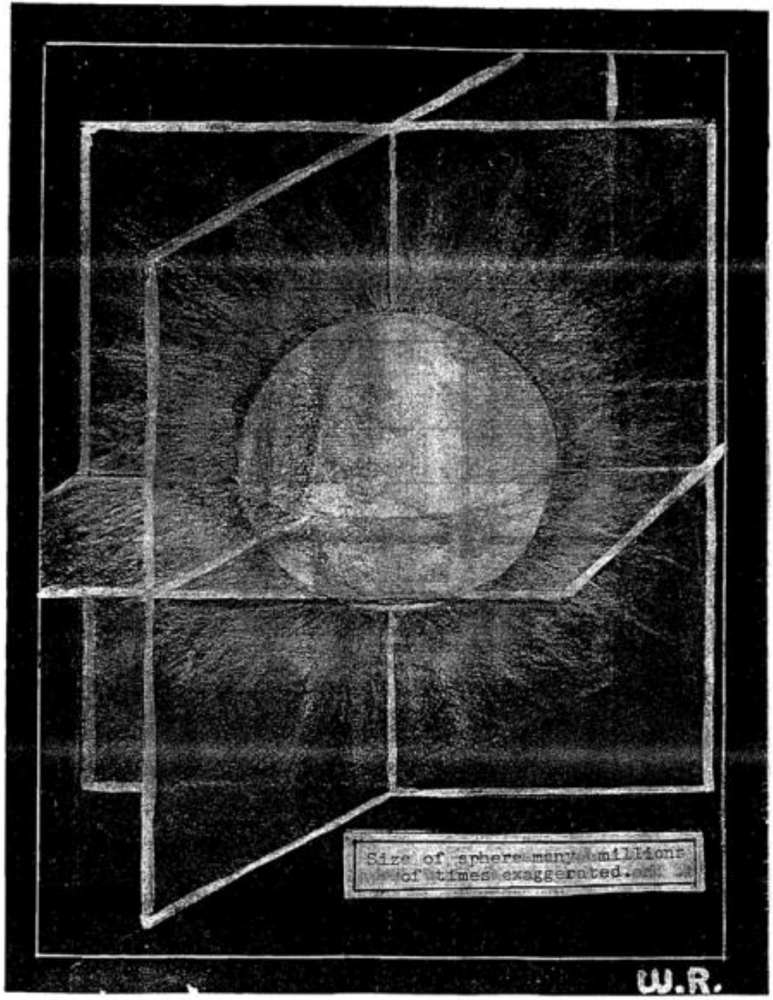

Lesson 43: The Four-Dimensional Cube-Sphere of Curved Motion¶
GEOMETOR Revamped Cosmogony Plates
This lesson’s core geometric diagrams have been reconstructed as precision parametric vector plates:


GEOMETOR Vector Reconstruction (Fig. 114): The Cube-Sphere Wave-Field of Nine Equators and Wave Octave Formula.¶
The basic underlying principle of God’s CREATING universe of two-way motion is the equilibrium of absolute stillness. It is the stillness of the magnetic Light of God’s knowing. The entirety of God’s Still Light of knowing is a fulcrum from which the electric lever of God’s thinking extends from every point of that stillness to create an illusion of reality through motion.
Do you now fully realize that everything which your senses tell you are a thousand different substances, is only motion? There is no substance in all of this universe. Creation is motion–wave motion–vibrating wave-motion of seeming substance which comes and goes springing from rest and returning to rest.
And has it ever occurred to you that your senses are but motion which feel other motion.
Do you also fully realize that there is no such thing as time in a universe of rest in which there is no sequence. Do you realize that sequence of vibrating wave motion is the only thing which makes you think that there is such a thing as time.
Do you also realize that there is no such thing as dimension–no height, no length, breadth or thickness to anything except transient motion which appears to your senses, and then disappears from them
We shall not take space for a more involved and scientific treatise on this illusion of motion which we think of as Creation, because there is still too much of more importance for these few remaining lessons, but we do wish to say enough to set your own imagination and knowledge at work so that you can set your values on actual REALITY and not waste your life away by giving your thoughts and energies to a mirage with the mistaken thought that there is substance in a mirage.
It may help form your thoughts by imagining yourself witnessing a drama at a motion picture show. Let us review what happens. You first view an unchanging, motionless, colorless screen. Let us liken that blank screen to the blank screen of space upon which nothing is seemingly happening. Nothing whatsoever is dividing that blankness into forms or events as yet.
A motion picture projection camera suddenly begins to divide that silent, formless, motionless, undivided surface into many moving forms of many events which now take place and excite your senses to respond to the motion.
f. 0405 · p. 405All of this motion represents an idea, an idea which has arisen from the thinking of some one’s Mind. Creation is but the dramatization of IDEA by projecting it from the stillness of KNOWING into a time-space universe of THINKING.
Idea must have formed bodies which must move to simulate the idea. And sounds must arise from the silence–curved sound-waves which bend in reversed pairs from equators which merely lend something to each for them to make believe with for a time until the lendings come due and must be repaid.
All of this is done by projecting undivided white light through patterned black and white light negatives into mirrors and lenses of the projection machine which seemingly divides the one still Light into a seeming two WHICH MOVE. Formlessness is thus divided into seeming form–silence into seeming sound–and unchanging condition into seeming change. Time begins also when the picture begins for until then there are no sequences of events to create time.
When the projector shuts off the dividing light all motion ceases. Likewise all of the effects of that polarizing division cease. You can no longer see hear or otherwise sense anything upon that screen, for there are no vibrating waves to make your senses vibrate with wave motion.
To you the play is finished. You quite naturally understand that it is all illusion created by divided lights, patterned forms of ideas and the optical effects which mirrors and lenses can produce to make you believe that those racing horses and shouting men are real. You know that they are not however. All you have seen is MOTION–MOTION simulating IDEA–Motion dominated by INTELLIGENCE, and motivated by DESIRE.
Why then do you not know that the projected optical illusion produced by the division of two lights in a wave -field of Nature’s cosmic cinema also is unreal? You see all wave motion cease on the lake and THAT picture comes to a seeming end. You see the storm cease and THAT picture comes to an end. But you never see the whole universal picture cease and come to rest. It is always going on in continuous wave-fields. Nature is a continuous cinema and you are an actor in it, but you are not aware of THAT.
There is always the pulsebeat of that electrical polarization process going on which we think of as LIFE –or the life principle. Your senses can never cease while you are a part of that universal heartbeat. To you that becomes reality because you have never been enabled to see the whole motion picture drama of Creation come to an end. You can never see the blank screen of space upon which that cosmic drama is to be projected, as you can see the blank screen upon which man’s motion picture plays are going to be projected. All you can see in all Nature is MOTION which simulates idea, dominated by Intelligence, and motivated by desire.
For this reason you have never suspected that each wave-field in Nature is a perfect motion picture projection machine, all completely fitted with the mirrors and lenses which divide light into waves of motion and the pairs of opposite conditions which makes the vast complexity of optical effects–which Creation is–possible.
The mirrors and lenses of Nature’s wave-field projection machines are even enclosed in six sided-boxes, to insulate them from outside effects just as man’s machines are enclosed for the same reason.
These lessons are drawing too nearly to a close to more than touch upon this principle but it is imperative to give a brief explanation of Nature’s mechanics which makes it possible to create this vast illusion of change, time and dimensions of substances where neither change, time dimension or substance have any being.
Let us, therefore, briefly unfold the mystery of how form, color, sounds heat, cold, solidity, tenuity, compression and expansion pressures, and all of the quantities of many things that bodies are composed of are thrown on the screen of cosmic space.
f. 0406 · p. 406POSTULATES¶
The foundation of God’s invisible universe of all-knowing is LIGHT–undivided and unchanging LIGHT
The foundation of God’s visible electric thought-wave universe of form and motion is divided or polarized light.
Polarized light means that two opposed and unbalanced pressure conditions (which strongly resist their division, and multiply that resistance as the division increases) have been established by the extension of two poles from a dividing equator.
The two opposing electric pressures thus generated are compression and expansion. Compression is the result of the “winding up” of light into centripetal spiral vortices. This generates terrific heat which thrusts spirally outward in resistance to its opposing pressure. Heat thus generated radiates centrifugally. It expands that which has been compressed. Compression polarizes–expansion depolarizes. Each are then reversed and become the other in the following cycle.
Motion is thus two-way–two opposite ways exerted in two opposite directions by two opposing forces which pull away from each other with great intensity to become TWO, then relax that intensity of opposition to become ONE, for the purpose of repeating it to again become TWO.
The constant effort of the two opposing electric forces to divide their one united, balanced condition into two opposing, unbalanced ones, followed by a sequential desire to seek rest from that effort in their oneness of balance, is the sole cause of motion. All motion is the result of interchange between the two opposing electric forces for the purpose of exchanging their conditions with each other.
What we think of as visible light is not light at all. What we see and think of as light, is but MOTION. The greater the intensity of motion the greater the intensity of what our senses interpret as light. What we think of as dark is but an expansion of the intensity of motion. Our senses interpret short waves of high frequencies, compressed into small volume, as incandescent light but when those short waves expand into long ones of low frequencies, and spread out into large volumes our senses cease to vibrate to the measure of the compressed waves. As our senses lower their vibrations, so, likewise our range of perception lowers. The One Light of universal Mind cannot be seen. It is the simulation of that ONE in the divided TWO of motion which we see. Our senses are vibrating waves of motion and they can sense only vibrating waves of motion.
Motion is made use of by the Creator to manifest His IDEA. Idea cannot be seen for it is never created. Idea IS–it cannot become. Idea is a QUALITY of Mind which cannot become physical QUANTITIES. Idea can only be extended as a simulation through two-way interchange of motion.
Motion is made use of by the Creator to manifest His BALANCE. Balance cannot be created. Balance IS–it cannot become. It can but be simulated by interchange between two unbalanced conditions.
The supreme achievement of man is to so move that all of his reactions balance his actions with the precision in which the Creator keeps all of the stars in His heavens in balance with each other.
Motion is made use of by the Creator to manifest His ENERGY. Energy likewise cannot be created for energy IS. It can only be simulated through two way motion in opposite directions. Energy is a fulcrum which never moves but manifests itself by motion extended from its stillness through the two-way levers of gravitation which compresses, and radiation which expands that which has been compressed. These two are not energy. They but simulate energy by expressing it in motion.
The entirety of this convincing universe of seeming reality is motion controlled by INTELLIGENCE and powered by DESIRE. The realities of love, truth balance, idea, inspiration, religion, invention, beauty, the arts, romance, courage, character, ethics, loyalty and all of the ennobling or debasing attributes of man’s world are not in matter or motion at all. Give thought to this all who think of their bodies as themselves.
Matter consists of countless little and big whirlpools of two-way motion. One of these two directions winds up its two intertwining electric opposites into an incandescent fury of explosive resistance which become the suns of stellar, solar and atomic systems.
That winding up of motion is what polarization is. That fury of resistance to the winding up process is what compression is. That also is what gravitation is. And all of it is but one piston stroke of the electric heartbeat of the universe of matter.
That polarizing piston stroke which generates the hot light of suns electrically records God’s concentrative thinking in the forms of Creation which simulate God’s knowing. That polarizing piston stroke vitalizes bodies and makes them “live” and grow toward strength. That polarized light of suns repolarizes other bodies while the dark of space depolarizes them. But God’s concentrative thinking is sequentially repeated in reverse. The intensity of generated resistance to such compression must relax. The wound up whirlpools of motion which simulated one half of life must unwind into the cold dark of space to simulate the other half. Everything which appears must disappear.
That opposite, relaxing piston stroke of God’s decentrative thinking depolarizes, degenerates and devitalizes bodies and makes them seem to “die” and decay. It gives bodies back to the source of their borrowings. It RADIATES that which has been GENERATED.
In motion alone is the answer to all of the mysteries of matter. With one stroke of the piston we “live”–with the other we “die”. With the next stroke of it we are reborn to again die. And so it is that the cosmic cinema goes on forever. Bodies appear, disappear and reappear as a continuity forever and forever, but they never die, for they manifest eternal life, and LIFE CANNOT DIE.
f. 0408 · p. 408But in bodies of matter there are none of the realities of the eternal life, love truth and balance which matter only simulates. Why, then, set such store upon transient matter? Why worship motion which but simulates the Intelligence of Mind.
This is but a thought universe an electric record of the thinking of Mind. The reality of YOU is not in your body. The only interest you should have in your body is the mental interest in building it into the kind of body you would like it to be to manifest YOU. You build your own body in the image of your SELF.
Whatever your Self is your body will be. Whatever your thoughts are your body will record whether balanced or unbalanced good or bad, sickness or health misery or supreme happiness. The eternal YOU is a glorious illumined, divine Being. Do you know your Self as THAT? To the extent that you do know your Self as a glorious, transcendent Being your body will manifest that glory in every cell of it. It cannot help doing so. Electric recordings of thoughts in matter are automatic. It is LAW. It never errs.
Forget your body therefore. Your body will automatically be what your thoughts are. Build a beautiful healthful sound vital body by thinking transcendent thoughts and putting those thoughts into action for the good of your neighbor and the world. Put Mind first, body last. Live in an ecstatic mental reality and make your body conform to the balanced rhythms of ecstasy.
Remember this–never for a moment forget it–that Mind controls motion and desire of Mind furnishes the power to motivate motion. The troubles of man arise from the fact that matter and motion control him. His inability to recognize the fact that the sensations caused by the motion of matter will dominate him, and lead him toward a selfish greedy life of seeking unreal possessions whereas a mental existence will dominate those sensations to his everlasting glory.
The conditions which exist in man’s world of today make it seem a discouragingly long time before all men will learn the great lesson of life –that he who seeks possessions for himself will never find them–until he begins to give of the abundance of possessions which he already has.
No matter how little any man has to give it will return to him multiplied unto his own glory. That is the LAW. When will mankind KNOW THAT LAW?
We shall now scientifically prove that the above statement is law, not altruistic idealism; nor sentimental nonsence, as the world of today would pronounce it.
THE MIRRORS AND LENSES OF THE COSMIC CINEMA¶
Imagine yourself standing in the middle of a room whose walls, ceiling and floor are six mirrors. No matter what direction you look you would see yourself mirrored in every one of those six mirrors, the four which are around you and the two which are above and below you.
If you look carefully at all of the replicas of you which you see in those six mirrors you will note that every image of you is in reverse. Your right side is left, your head is below your feet in the mirror below and your feet are above your head in the mirror above. This most distinguishing characteristic of motion seems never to have been observed.
f. 0409 · p. 409If you were a true sphere of light, like a sun, that perfect cube of six mirrors of zero curvature would be a wave-field which measures the intensity of your desires and limits your powers of expression within them. Beyond them you cannot extend, and what you extend to them comes back to you in kind.
You will also see the mirrored images of yourself, which are in each of the six mirrors, again mirrored behind your own first image as each mirror reflects itself and its image into series after series of mirrors which reach beyond your capacity into a mirrored infinity.
That is what infinity is. INFINITY is a mirrored extension from one imagined point in the universe to every other imagined point, and back again to that same point from every other imagined point. Infinity is zero simultaneously multiplied and divided by zero, forever and forever.
That is also what the brotherhood of man means. Every man in that cube mirrored universe of six mirrors infinitely multiplied and divided by zero is but one man. There are no others.
Every creating thing in the universe is an infinite extension of every other creating thing. All are one. Each is the other.
If desire for an action takes place at any zero point in that six mirrored universe, that same zero point is reflected throughout the infinity of cube extensions of that limited little universe which yours is if you see only its limitations without being able to see its reflections which extend your limitations unto infinity.
That zero point of your desire is where you begin and end. That point is universal. YOU are universal. The Self of you is there as universal Self. Your Soul is there as universal Soul. The other reflected zero points are points of the beginning and ending of every thought and action which you give expression to. They go forth from that point and come back to that same point to be recorded in that zero of your Soul which centers the universe of YOU.
At that immeasurable and invisible point is the entire eternal record of you. What you are is the sum total of your desire. Your Soul records your desire.
Electrically all of the reflected extensions of that point of YOU are termed harmonics. Those harmonics stand ready to repeat the record of yourself throughout the universe in waves–and when those waves of your thoughts and actions lie still the record still awaits in the zero of your beginning, and all of its extensions, throughout the infinity of imagined space. See Figure 96, page 714.
Chemically these zero points of beginnings and endings are the inert gases of the elements, the patterned seed record from which the octave waves of the elements of matter appear. The inert gases are the seed from which patterned waves of the elements spring as oak trees spring from the patterned inert gas which centers the acorn. The plane upon which the inert gases rotate is 90
degrees from the plane of carbon’s equator, which is upon the wave’s amplitude. See Figure 103.
The inert gases are the electric records of all patterned bodies. They record all actions and motion which constitute events, but they do not record the morals, ethics, inspirations or the mental qualities of the genius in you. These God qualities are recorded in the Soul which centers the physical record. Thought records are stored in the inert gases which become cell memory, instinct, and other attributes of body rebuilding. These records carry over from body to body forever, and unfold true to the patterns of the negatives in space which they center.
f. 0410 · p. 410The whole pattern of an oak is not just in the inert gas which centers the acorn, nor is the whole of man in the seed of man. Every pattern reaches out into the wave-field which contains the negative counterpart of its positive, visible body.
If you will but remember that Soul is DESIRE in the seed, its motivating force, you will then comprehend how the inert gas acts as a nucleus, or center around which matter in motion accumulates to make a new body. This it could not do without the motivating force of desire, for nothing is, or becomes, without desire.
In this is the answer to why bodies do not inherit the genius of their parents. They inherit only the bodies, for bodies are motion, the motion of thoughts is all that is recorded in matter. Intelligence cannot be transmitted but bodies of highly intellectual people develop bodies which are more capable of becoming intellectuals than those who have not developed great brain capacity for storing thought-records.
MOTION NOW BEGINS¶
Instead of imagining yourself being at that center you now are there in body, and your desire is to throw a ball.
You now make a momentous discovery in relation to this cosmic projection machine in the center of which you are standing. You now discover that there are nine light mirrors instead of six, and you wonder why.
You discover that the bringing of your objective self into its center brought with it also these three more equators which divided you into three dimensions, length, breadth and height, which were not there before you stepped into it and your imagined image of yourself did not disclose that fact before. See Figures 105 to 113.
f. 0411 · p. 411
Archival Plate (image073.gif)¶



Archival Plate (image074.gif)¶



Figure 105 represents your imagined point in God’s undivided equilibrium which you wish to extend to manifest YOU and DESIRE in you, in a divided, three dimensional world of illusion.
Figure 106 represents your extension of desire in height to the limits of your wave-field. The one zero of Figure 105 has now been extended to become three zeros. You now have a measure of height in your wave-field beyond which you or any action of yours, cannot pass, but a reversed image of you can seem to pass. That seeming seems so real to your senses that you do not doubt its reality or suspect its illusion.
f. 0414 · p. 414Figure 107 represents your extension of desire in length to become three zeros. You have now extended yourself two dimensionally such as a painting of you would be.
Figure 108 represents your extension of desire in breadth to become three more zeros of rest between which you may divide your little universe into the action-reaction which you desire. The intensity of that desire has been measured out for you the moment you desired to perform the action.
Observe very carefully the fact that there are three times three zeros now measured out for you in the Light of equilibrium which you now wish to seemingly disturb by the action of throwing a ball. Each three is a manifestation of The Divine Trinity and the total of nine is as far as any expression
of motion can go in the curved universe which your action is about to create.
The nine zeros measure the length, breadth and thickness of your desire to reach out from the point in space from which to express your desire to the six mirrors which bound your wave-field. You now discover that the three inner mirrors which you had not noticed before you became objective, are the actual projectors of your desire, and the other six boundary mirrors are the cube screen upon which the projecting mirrors of your own little cosmic cinema throw the patterned motion picture of your desire.
The cosmic cinema, therefore, consists of three projection mirrors of zero curvature and six receiving mirrors upon which the patterned forms of creative desire are projected as a three dimensional screen of space. See Figures 109-110 and 111 for the three inner projection mirrors and Figures 112 and 113 for the cosmic cinema screen of six mirrors.
You must thoroughly understand that mirrors and equators are the same thing. We use the two words because each has a different connotation. The word “mirrors” connotes reflection and they reflect every happening on each side of them to the other side in reverse.
We use the word “equators” in the sense that they equalize all polarized effects. The stillness of the universal equilibrium could not be divided into opposite conditions of motion unless equators are established between the two into which both disappear when depolarization restores balance between the two. Radiation and gravitation are simulated by these mirrors.
You cannot see the equators of space but there are many you can see, and many you can know where to locate without being enabled to see. For example, you know where to locate the equator which divides the two opposite conditions which exist in the northern and southern hemispheres.
The calm surface of water is an equator which you can see. When in equilibrium its relation to gravity is the same at every point upon its surface. When polarization divides that equilibrium by curving gravity pressure to points above and below that calm surface motion will continue until depolarization restores the normal stillness of an undivided equilibrium.
You can see a violin string but you may not realize that while it is at rest it is an equator between two possible unbalanced conditions just as the calm surface of the water is. When you produce sound by vibrating it, sound waves spring from it as waves of water spring from the calm lake, but there is no sound at all where that violin string equator is, just as there is no motion when waves of water reverse their polarization at their equator.
f. 0415 · p. 415You must thoroughly realize that the slightest motion of any kind polarizes an environment and equators are immediately set up to keep the universal balance from being disturbed–which is impossible.
The airplane on the ground is in equilibrium, at rest with its environment. The moment it moves it polarizes that environment. Nine insulating equators are immediately formed in the measure of the intensity of motion. You are more familiar with the equator which is behind the plane, the one which is equi-distant from the two poles which have been set up by motion, but equator planes of zero curvature are set up all around the plane in all of the six directions which extend from its center.
A VITAL LESSON OF LAW AND GOD’S WATCHFULLNESS OVER ALL CREATING THINGS¶
Right here and now is the opportunity to get a deeper understanding of God’s Word as expressed in The Divine Iliad Message, which we again repeat: “For behold I am within all things, centering them, and I am without all things, controlling them”.
The three inner mirrors of God’s Light give to you the measure of your desire to extend your action.
The six outer mirrors REPEAT YOUR ACTION IN KIND as the reaction to your action. They not only give back to you in kind that which you have given but they repeat it unto the whole universe in kind.
Whatever you do unto man you do unto yourself and all men.
That is the law. Now prove it–and understand it–by beginning your action of throwing the ball and take note of the amazing series of things which are happening. Let us number these happenings.
THE ACTION BEGINS¶
As you throw the ball away from you with your right arm toward the image of yourself in front of you, the other one is throwing the ball away from himself and back toward you with his left arm.
You could not throw the ball without concentrating the power to do so toward a point of rest from which the ball starts its journey. The measure of your concentrated power is the measure of your concentrated desire. Concentration of power means to accumulate it to a point of stillness. That is the generative principle of Nature which is known as gravity. GRAVITY IS THE ACCUMULATION OF POWER TO RADIATE GOD’S GIFT OF LOVE.
The point of beginning where your ball comes to rest ready for the radiative action is a center of gravity. You have borrowed the power to hurl the ball from the center of gravity of the earth. You intend to extend earth’s gravity into the heavens. This you cannot do without earth’s permission. It freely lends you its power to radiate its gravity for it demands repayment in equal measure after you have fulfilled your desire.
f. 0416 · p. 416Earth therefore extends to you a fulcrum from which you may extend your desire. Your body must become the lever which extends your desire into four dimensional form. It is from that still fulcrum of borrowed gravity which you extend your action of giving of your abundant energy as a mechanical extension of the earth which your body is.
Ten times ten thousand pairs of opposite reflected extensions of you are doing the same thing–throwing the ball away from themselves toward their opposites who are throwing it toward their opposites and away from themselves each one of each pair being the reverse of its opposite and acting in reverse. YOU NOW KNOW WHAT THE ELECTRIC CURRENT IS and that should tell
you what RADAR is Likewise it explains RADIO and TELEVISION.
As you throw the ball with great force from the center which is YOU toward that extended image opposite you its speed lessens until it reaches the measure of its height which has been set for you as the measure of your desire. It comes to rest at that point for the purpose of repeating its flight in reverse. That rest point is upon one of the six equalizing mirrors which bound your wave-field. The ball itself, as a physical mass, may pass on into the next wave-field, as it does all through Nature–but the motion of the ball, or the force which propelled it cannot pass beyond any mirror plane of zero curvature.
The force which you generated has been entirely radiated at that boundary plane. Its speed has decelerated to zero. All that you had to give has been given.
Your opposite mate has, likewise, expelled the ball from him with equally great force which decelerates in speed as it radiates away from him. His ball also came to rest at the same point that your ball came to rest. His action of GIVING is also finished as yours has.
NOW COMES THE REACTION. RADIATION REVERSES TO GENERATION.¶
The action of your desire to give out from you has been fulfilled. Starting from rest your desire has reached a point of rest. It must now return to a point of rest and regive all that has been given. The ball which you have thrown to your ten thousand times ten thousand mates now begins to descend into their hands from you, and into your hands from them. Regiving has begun its automatic reaction. THE BALANCING OPPOSITE OF RADIATION IS GRAVITATION.
As the ball which your opposite image has thrown to you falls in your hands it accellerates in speed because it is now approaching the inward direction of gravity. Gravity is multiplied potential and all objects falling toward a center of gravity multiply their speed.
The gravity borrowed from earth to hurl the ball away from earth is now being repaid by the ball as it falls to earth. Every inch of falling adds to its potential just as every inch of rising subtracted from it.
The power which you have given out from the abundance given you by earth for regiving has returned to you multiplied.
The energy given by you for creative expression degenerated and devitalized you in the giving but regenerated you and revitalized you by the automatic, irrevocable regiving, GIVING DEPOLARIZES AND REGIVING REPOLARIZES.
Likewise what it has done to you has been done to the whole universe. Whatever little universe you have created uplifts or lowers the level of the whole. What you have given returns in kind to bless or smite you–and the whole world.
f. 0417 · p. 417THE LESSON OF IT¶
Every thought and action of anyone affects everyone. The unfolding of man to higher levels because of the balanced giving by the few is resisted by the downward drag of unbalanced taking by the many.
What is happening anywhere is also happening everywhere.
NOW FOR THE NEXT STEP–THE CURVED UNIVERSE OF MOTION¶
As you throw the ball upward toward your opposite mate, who is on the other side of the equator of rest which bounds one side at your measured wave-field, you make the discovery that your ball is not being projected from you in a straight line. It gradually begins to curve.
The same thing is happening to all of the other projected balls. They all curve in the same manner. Curvature also ceases at wave-field boundary mirrors where motion ceases, and repeats its pattern of motion in reverse as motion also begins again on the other sides of all dividing equators.
CONCLUSION¶
We are now entering a new world of illusion–the illusion of curvature which begins at the center of each wave-field and ends at its boundary mirrors. That new world of spirals which wind and unwind,–of spheres which oblate and divide their one focal center of gravity into two foci–of gyroscopes which give orderly tones in octave form to every unfolding system, and all of this marvel and majesty of Natural Law will briefly be unfolded in the last series of lessons which will climax with the revelation of the principle by means of which the cube mirror wave-fields are formed and the nine octave cycles of the elements of matter form within them to become the stage for the setting of the Cosmic Drama of Creation, and for you and all mankind who are the actors in it.
The great lesson you should learn from this is that the more you are enabled to give out from your own Self the more will be regiven to you.
Giving does not lessen your substance, it multiplies it. Whatever Nature RADIATES is given back to her. It GRAVITATES back to repolarize the source of giving.
When earth gives vapors to the heavens, the heavens multiply the vapors into rains and give them back to replenish earth. If earth withholds its giving of vapors it will become a parched desert. Its reservoirs of waters which it retains for itself, will become emptied.
THE TREASURY OF HIM WHO GIVES FOR THE GOOD OF THE PEOPLE OF EARTH
WILL ALWAYS BE FILLED TO OVERFLOWING BY THE PEOPLE OF EARTH TO WHOM IT IS GIVEN. BUT HE WHO LOCKETH THE DOOR OF HIS TREASURY FOR HIS OWN USE ALONE SHALL SOON FIND IT EMPTY. THIS IS LAW, UNFAILING AND INEXORABLE LAW–THE UNIVERSAL LAW OF LOVE.